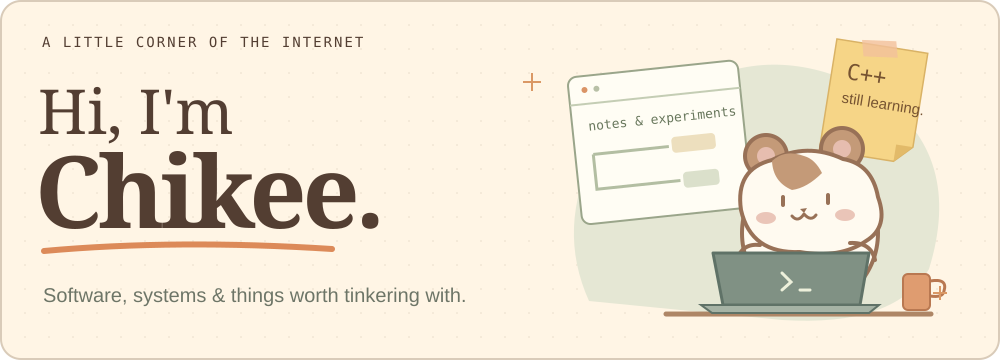
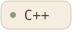
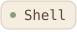
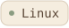
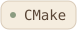
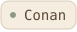
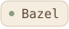

I'm Chikee, a software engineer working with C/C++, embedded systems, and software architecture.
Much of my work is about getting software to build, run, and work across different platforms. Linux and QNX are familiar territory.
Here on GitHub, I tinker with Linux workstations and developer tools — how a development environment looks, feels, and fits together.
Some of that tinkering lives in utopia →, my project for reproducible Linux workstation setups.
Languages


Platforms & build tools



